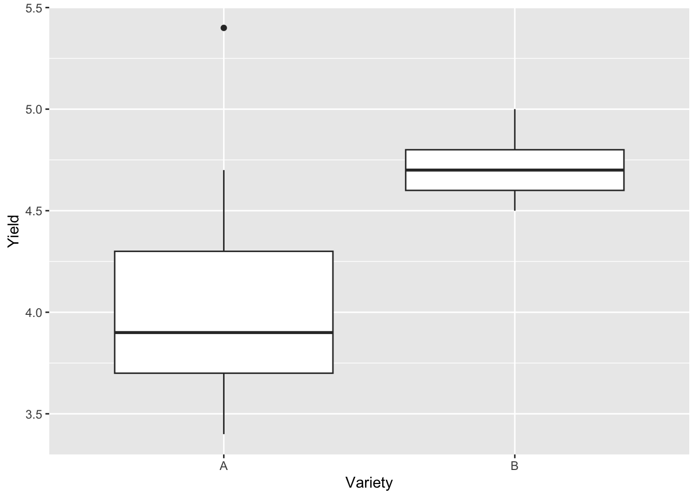
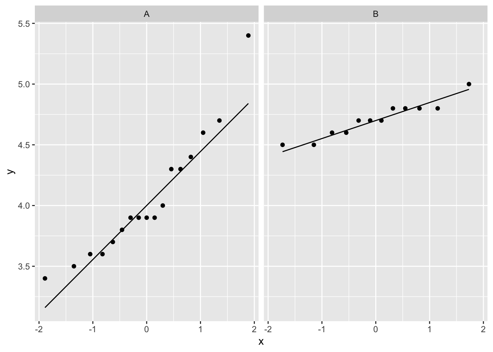
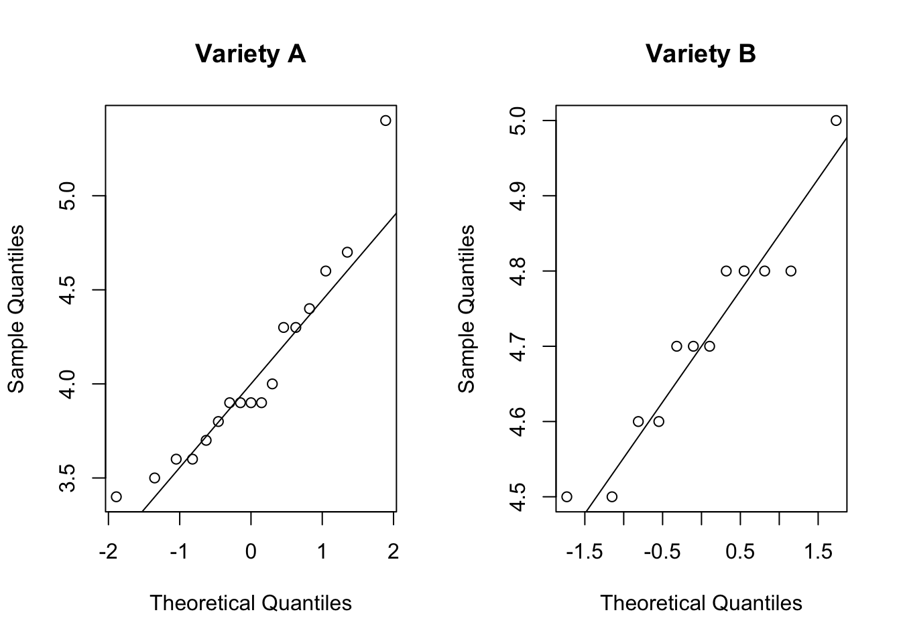
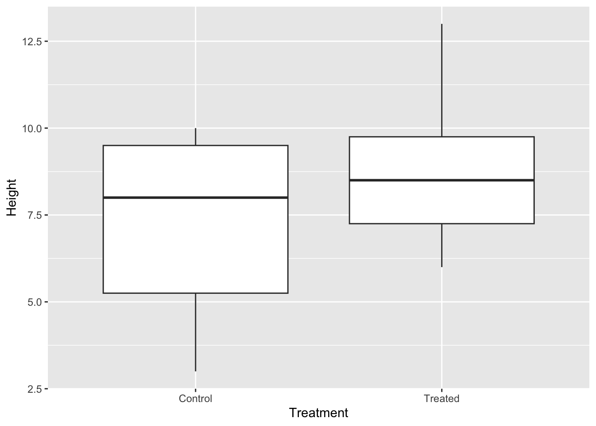
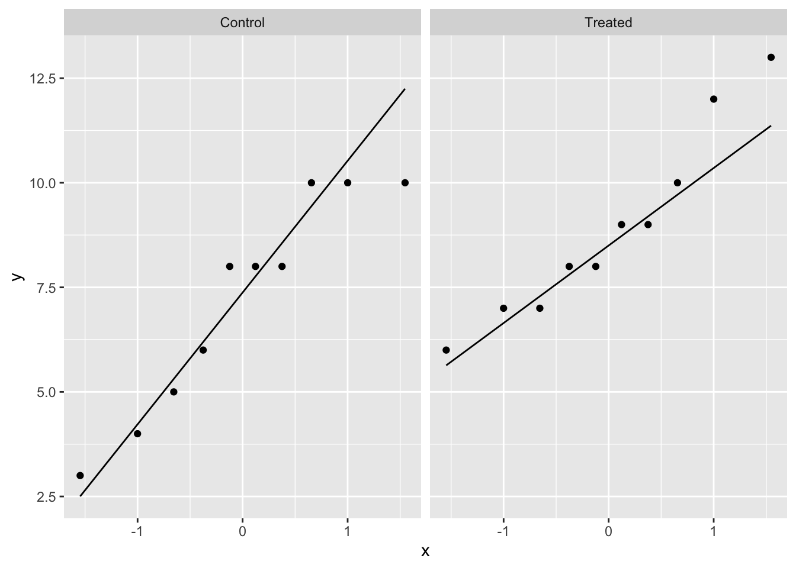
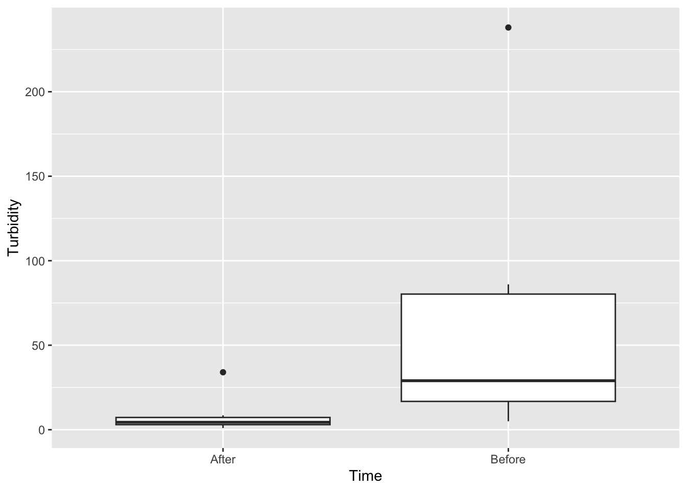
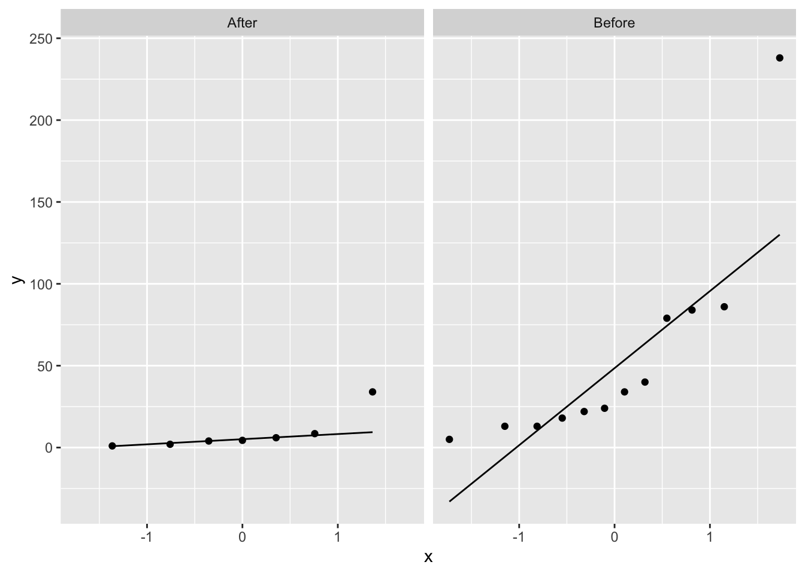
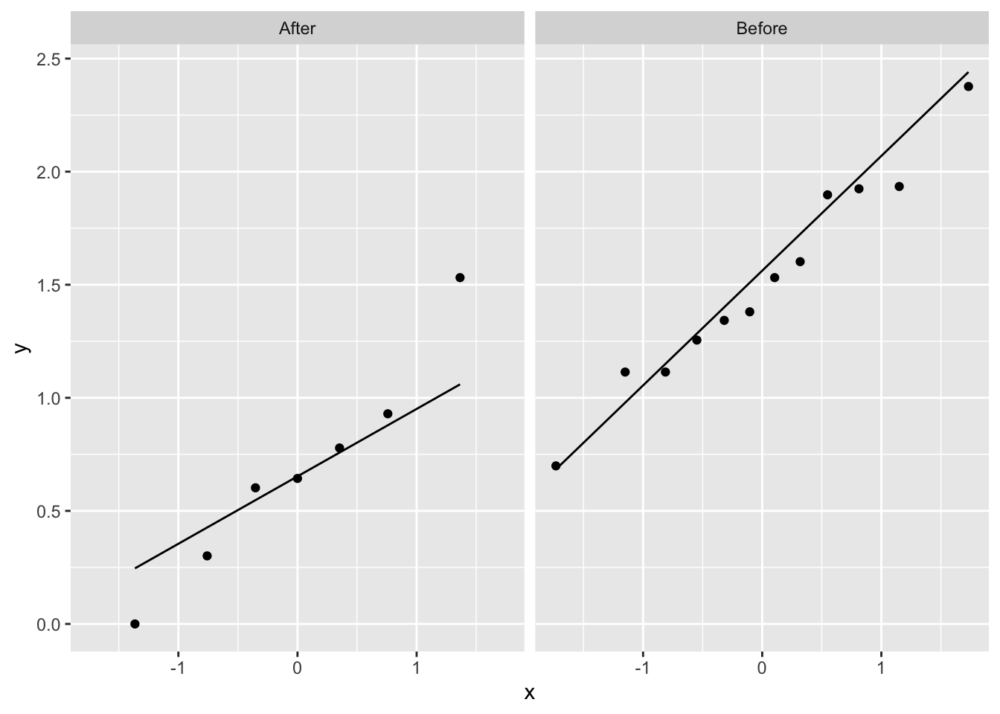

barley <- readr::read_csv("barley.csv")
dplyr::glimpse(barley)Rows: 29
Columns: 2
$ Variety <chr> "A", "A", "A", "A", "A", "A", "A", "A", "A", "A", "A", "A", "A…
$ Yield <dbl> 4.6, 4.3, 3.8, 3.4, 3.9, 3.9, 3.9, 4.4, 3.6, 3.6, 4.7, 3.9, 3.…Create your Quarto document and save it as Lab-06.Rmd or similar. The following data files are required:
You may need to right-click on the link and select “Save link as…” to download the data files.
The following external packages are used in this lab. Install them if you have not done so already.
install.packages(c("tidyverse", "car"),
repo = "https://cloud.r-project.org")Finally, try to complete today’s lab exercises in pairs and try out pair programming, where one person writes the code and the other person reviews each line as it is written. You can swap roles every 10 minutes or so. This is a great way to learn from each other and to improve your coding skills.
An experiment was designed to compare two varieties of spring barley. Thirty four plots were used, seventeen being randomly allocated to variety A and seventeen to variety B. Unfortunately five plots were destroyed. The yields (t/ha) from the remaining plots were as they appear in the file Barley.csv.
First, quickly explore the data; then, utilise the HATPC process and test the hypothesis that the two varieties give equal yields, assuming that the samples are independent.
HATPC:
The level of significance is usually set at 0.05. This value is generally accepted in the scientific community and is also linked to Type 2 errors, where choosing a lower significance increases the likelihood of failing to reject the null hypothesis when it is false.
First we load the data and inspect its structure to see if it needs to be cleaned or transformed. The glimpse() function is a tidy version of str() that provides a quick overview of the data that focuses on the variables, ignoring data attributes.
Try to compare str() and glimpse() to see what the differences are.
barley <- readr::read_csv("barley.csv")
dplyr::glimpse(barley)Rows: 29
Columns: 2
$ Variety <chr> "A", "A", "A", "A", "A", "A", "A", "A", "A", "A", "A", "A", "A…
$ Yield <dbl> 4.6, 4.3, 3.8, 3.4, 3.9, 3.9, 3.9, 4.4, 3.6, 3.6, 4.7, 3.9, 3.…The Variety column is a factor with two levels, A and B, but it is defined as a character. We can convert it to a factor using the mutate() function from the dplyr package, but it is not necessary for the t-test since R will automatically convert it to a factor.
library(tidyverse)── Attaching core tidyverse packages ──────────────────────── tidyverse 2.0.0 ──
✔ dplyr 1.1.4 ✔ readr 2.1.5
✔ forcats 1.0.0 ✔ stringr 1.5.1
✔ ggplot2 3.5.0 ✔ tibble 3.2.1
✔ lubridate 1.9.3 ✔ tidyr 1.3.1
✔ purrr 1.0.2
── Conflicts ────────────────────────────────────────── tidyverse_conflicts() ──
✖ dplyr::filter() masks stats::filter()
✖ dplyr::lag() masks stats::lag()
ℹ Use the conflicted package (<http://conflicted.r-lib.org/>) to force all conflicts to become errorsbarley <- mutate(barley, Variety = as.factor(Variety))Quickly preview the data as a plot to see if there are any trends or unusual observations.
barley %>%
ggplot(aes(x = Variety, y = Yield)) +
geom_boxplot()
A trained eye will anticipate that the data may not meet the assumption of equal variance; however, we will test this assumption later. Otherwise, there appear to be no unusual observations in the data.
What are the null and alternative hypotheses? We can use the following notation:
H_0: \mu_A = \mu_B H_1: \mu_A \neq \mu_B
where \mu_A and \mu_B are the population means of varieties A and B, respectively.
It is important that when using mathematical symbols to denote the null and alternative hypotheses, you should always define what the symbols mean. Otherwise, the reader may not understand what you are referring to.
The equations above are written in \LaTeX, a typesetting system that is commonly used in scientific writing. You can learn more about \LaTeX here. The raw syntax used to write the equations are shown below:
$$H_0: \mu_A = \mu_B$$
$$H_1: \mu_A \neq \mu_B$$Why do we always define the null and alternative hypotheses? In complex research projects or when working in a team, it is important to ensure that everyone is on the same page. By defining the hypotheses, you can avoid misunderstandings and ensure that everyone is working towards the same goal as the mathematical notation is clear and unambiguous.
There are many ways to check for normality. Here we will use the QQ-plot. Use of ggplot2 is preferred (as a means of practice) but since we are just exploring data, base R functions are not a problem to use.
ggplot(barley, aes(sample = Yield)) +
stat_qq() +
stat_qq_line() +
facet_wrap(~ Variety)
par(mfrow = c(1, 2))
qqnorm(barley$Yield[barley$Variety == "A"], main = "Variety A")
qqline(barley$Yield[barley$Variety == "A"])
qqnorm(barley$Yield[barley$Variety == "B"], main = "Variety B")
qqline(barley$Yield[barley$Variety == "B"])
Question: Do the plots indicate the data are normally distributed?
Answer: Yes, the data appear to be normally distributed as the QQ-plot shows that the data points are close to the line.
From the boxplot, we can see that there is some indication that the variances are not equal. We can test this assumption using Bartlett’s test or Levene’s test; here we will just use Bartlett’s test.
bartlett.test(Yield ~ Variety, data = barley)
Bartlett test of homogeneity of variances
data: Yield by Variety
Bartlett's K-squared = 14.616, df = 1, p-value = 0.0001318Question: Does the Bartlett’s test indicate the two groups have equal variances? What effect will that have on the analysis?
Answer: The two groups have unequal variance (Bartlett’s test: X^2 = 14.6, p < 0.01). This means that we will need to use the Welch’s t-test, which does not assume equal variances.
We can now calculate the test statistic using the t.test() function in R. Since the variances are unequal, we do not have to specify the var.equal argument – the default test for t.test() is the Welch’s t-test which does not assume equal variances.
t.test(Yield ~ Variety, data = barley)
Welch Two Sample t-test
data: Yield by Variety
t = -4.9994, df = 19.441, p-value = 7.458e-05
alternative hypothesis: true difference in means between group A and group B is not equal to 0
95 percent confidence interval:
-0.9293569 -0.3814274
sample estimates:
mean in group A mean in group B
4.052941 4.708333 Since the p-value is < 0.05, we can reject the null hypothesis that the mean yield of both varieties is equal.
The conclusion needs to be brought into the context of the study. In a scientific report or paper, you would write something like this:
The mean yield of barley variety A was significantly different from that of variety B (t = -5.0, df = 19.4, p < 0.01).
In a test of a particular treatment aimed at inducing growth, 20 plants were grouped into ten pairs so that the two members of each pair were as similar as possible. One plant of each pair was chosen randomly and treated; the other was left as a control. The increases in height (in centimetres) of plants over a two-week period are given in the file Two week plant heights. We wish to compare whether the treatment is actually inducing improved growth, as compared to the control.
Here, we have two samples, and the samples are paired as it is a before-after experiment. So we’d like to conduct a paired t-test.
For paired t-tests the analysis is performed as a 1-sample t-test on the difference between each pair so the only assumption is the normality assumption.
Copy the structure below and perform your analysis in your document.
## Exercise 2: plant growth
### Data exploration
### Hypothesis
### Assumptions
#### Normality
#### Homogeneity of variance
### Test statistic
### P-value
### ConclusionNote that the data is not tidy. The code below will convert the data to the long format and assign it to tidy_plant.
plant_growth <- readr::read_csv("Plant_growth.csv")
tidy_plant <- plant_growth %>%
pivot_longer(cols = c(Treated, Control), names_to = "Treatment", values_to = "Height")You may also need to perform a Shapiro-Wilk test to check for normality. To do this for each group, you can use the tapply() function.
tapply(tidy_plant$Height, tidy_plant$Treatment, shapiro.test)ggplot(tidy_plant, aes(x = Treatment, y = Height)) +
geom_boxplot()
The boxplot shows no unusual observations.
H_0: \mu_{\text{treated}} = \mu_{\text{control}} H_1: \mu_{\text{treated}} \neq \mu_{\text{control}}
where \mu_{\text{treated}} and \mu_{\text{control}} are the mean increses in height of the treated and control plants, respectively.
ggplot(tidy_plant, aes(sample = Height)) +
stat_qq() +
stat_qq_line() +
facet_wrap(~ Treatment)
The QQ-plots show that the data are normally distributed, but there are some outliers worth checking. A formal test for normality will give us a better idea of whether the assumption is met.
# perform test on groups
tapply(tidy_plant$Height, tidy_plant$Treatment, shapiro.test)$Control
Shapiro-Wilk normality test
data: X[[i]]
W = 0.89588, p-value = 0.1973
$Treated
Shapiro-Wilk normality test
data: X[[i]]
W = 0.93139, p-value = 0.4617The Shapiro-Wilk test indicates that the data are normally distributed.
There is no need to test for homogeneity of variance in a paired t-test!
t.test(Height ~ Treatment, data = tidy_plant, paired = TRUE)
Paired t-test
data: Height by Treatment
t = -2.5468, df = 9, p-value = 0.03136
alternative hypothesis: true mean difference is not equal to 0
95 percent confidence interval:
-3.2099887 -0.1900113
sample estimates:
mean difference
-1.7 The p-value is 0.03 which is less than 0.05, so we reject the null hypothesis that the mean increase in height of the treated and control plants is equal.
The mean increase in height of the treated plants is significantly different from that of the control plants (t = 2.5, df = 9, p = 0.03).
A new filtering process was installed at a dam which provided drinking water for a nearby town. To check on its success, a number of water samples were taken at random times and locations in the weeks before and after the process was installed. The following are the turbidity values (units = NTU) of the water samples.
Now we consider further examples of a two-sample t-test, but where the assumption of equal variance and normality may not be met for the raw data. Sometimes after applying a data transformation the analysis can proceed assuming equal variances – but always check after a data transformation.
The data can be read with the code below:
turbidity <-read_csv("Turbidity.csv")For data transformation, you may need to create a new variable in your dataset to store the transformed data. For example, to create a new variable TurbLog10 that stores the log10 transformed turbidity values, you can use the following code:
turbidity$TurbLog10 <- log10(turbidity$Turbidity)To interpret the results for your conclusions, you may need to back-transform the mean and/or confidence interval values. To back transform log10 data you use:
10^{\text{mean or CI}}
To back-transform natural log, loge, you use:
e^{\text{mean or CI}}
turbidity <-read_csv("Turbidity.csv")
ggplot(turbidity, aes(x = Time, y = Turbidity)) +
geom_boxplot()
The boxplot shows skewing of the data, and outliers, a strong indication that the data will have issues meeting the assumption of normality. It is also likely that the variances are not equal as the boxplot shows different spreads.
H_0: \mu_{\text{before}} = \mu_{\text{after}} H_1: \mu_{\text{before}} \neq \mu_{\text{after}}
where \mu_{\text{before}} and \mu_{\text{after}} are the mean turbidity values before and after the new filtering process was installed.
ggplot(turbidity, aes(sample = Turbidity)) +
stat_qq() +
stat_qq_line() +
facet_wrap(~ Time)
The QQ-plots show that the data are not normally distributed. Transformation of the data is required – there is no need to look at the equal variances just yet.
We will use the natural log transformation to normalise the data.
turbidity$TurbLog10 <- log10(turbidity$Turbidity)ggplot(turbidity, aes(sample = TurbLog10)) +
stat_qq() +
stat_qq_line() +
facet_wrap(~ Time)
The QQ-plots show that the data look better. We can now perform a Shapiro-Wilk test to confirm this.
tapply(turbidity$TurbLog10, turbidity$Time, shapiro.test)$After
Shapiro-Wilk normality test
data: X[[i]]
W = 0.96995, p-value = 0.8981
$Before
Shapiro-Wilk normality test
data: X[[i]]
W = 0.97566, p-value = 0.9602The Shapiro-Wilk test indicates that the data are normally distributed.
We check the assumption of equal variance after the transformation.
bartlett.test(TurbLog10 ~ Time, data = turbidity)
Bartlett test of homogeneity of variances
data: TurbLog10 by Time
Bartlett's K-squared = 0.017795, df = 1, p-value = 0.8939The Bartlett’s test indicates that the variances are equal. We can now perform the t-test on the transformed data.
t.test(TurbLog10 ~ Time, data = turbidity, var.equal = TRUE)
Two Sample t-test
data: TurbLog10 by Time
t = -3.7169, df = 17, p-value = 0.001714
alternative hypothesis: true difference in means between group After and group Before is not equal to 0
95 percent confidence interval:
-1.302095 -0.359140
sample estimates:
mean in group After mean in group Before
0.683656 1.514274 The p-value is 0.007, which is less than 0.05, so we reject the null hypothesis that the mean turbidity values before and after the new filtering process was installed are equal.
We want to make a biological conclusion based on the results. To do this, we need to back-transform the mean difference and the confidence intervals so that the units are in NTU, not log10 NTU.
10^(1.514274 - 0.683656)[1] 6.77045710^(0.359140)[1] 2.28633610^(1.302095)[1] 20.04911The mean turbidity values before and after the new filtering process was installed are significantly different (t = -3.7, df = 17, p = 0.007). The new filtering process has effectively reduced turbidity by 7 NTU on average. We are 95% confident that the new filtering process will reduce water turbidity by between 2.3 and 20 NTU.